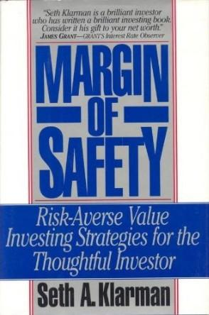

赛斯·卡拉曼（Seth A. Klarman）生于1957年，毕业于康奈尔大学和哈佛商学院，1982年创立博普斯特集团（Baupost Group），此后将其发展为全球规模最大的价值投资对冲基金之一，管理资产长期超过300亿美元。卡拉曼以极度低调著称，极少公开露面，但在价值投资圈中享有近乎传奇的声望。《安全边际》出版于1991年，彼时卡拉曼年仅三十四岁，全书仅印行五千册，初版定价25美元，销售平淡，出版商未曾再版。然而随着岁月流逝，这本书逐渐在价值投资者之间口耳相传，原版二手书价格在eBay和亚马逊上一度攀升至逾千美元，成为投资经典中最难得一见的珍本。
全书分为三大部分。第一部分批判华尔街的种种弊病，指出大多数机构投资者因短期业绩压力、薪酬结构失当和羊群效应，被迫追逐热点而非寻找真正被低估的资产；个人投资者则因信息不对称、情绪干扰和缺乏纪律，同样难逃亏损。第二部分阐明价值投资的理论基础——安全边际原则。卡拉曼强调，价值投资的本质是以低于内在价值的价格买入资产，差价即安全边际，这一差价既是防止判断失误的缓冲垫，也是长期超额收益的来源。他将内在价值的估算方法分为持续经营价值、清算价值和股市价值三种，并反复告诫读者：估值是一门艺术而非精确科学，保持悲观假设和足够的安全边际，远比精准预测更为重要。第三部分聚焦投资组合与风险管理，卡拉曼主张持有现金并不可耻，在找不到足够安全边际的机会时，宁可空仓等待，而不是将资本投入平庸的机会——"不亏钱"比"赚钱"更值得关注。
《安全边际》在价值投资界的地位犹如《圣经》，受到众多顶级投资人的高度推崇。据报道，沃伦·巴菲特（Warren Buffett）曾在被问及继承人问题时表示，如果他退休，他最希望的三位资产管理人之一便是赛斯·卡拉曼，足见其在业界的地位。乔尔·格林布拉特（Joel Greenblatt）是《股市天才》的作者，他曾公开将此书列为其所读过最好的投资书籍之一。卡拉曼本人在书中留下了许多经典论断，其中最常被引用的是："投资不是买股票，而是购买企业所有权的一部分；价格是你支付的，价值是你得到的，两者之间的差距决定了你的回报。"这句话与本杰明·格雷厄姆（Benjamin Graham）的传统一脉相承，又因卡拉曼在当代市场中的实证验证而具有更深的说服力。
对于关注价值投资的读者而言，《安全边际》的价值在于它所传授的不仅是方法论，更是一种心理框架。在市场狂热时保持克制，在市场恐慌时保持冷静，始终以安全边际为锚——这是卡拉曼职业生涯数十年如一日的信条。这本书的稀缺性本身也构成一种隐喻：真正有价值的东西，往往不在喧嚣的显眼处，而需要耐心寻访。对于在市场中寻求长期生存而非短期暴富的投资者，《安全边际》提供了一套经过时间检验的思维体系，其价值远超当年25美元的定价，也远超今日那些动辄数百美元的二手书价格。